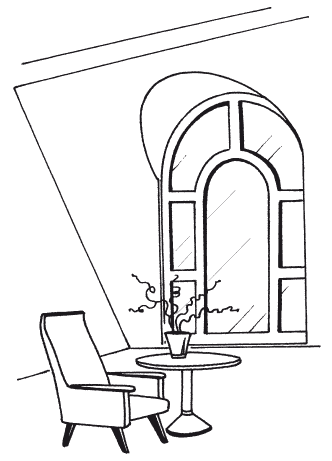
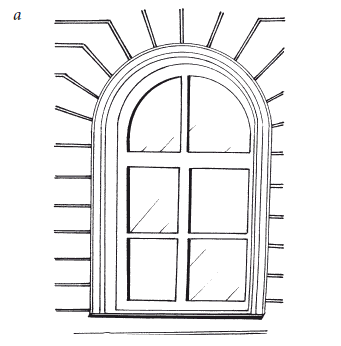
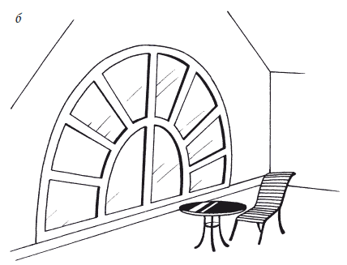
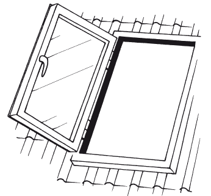
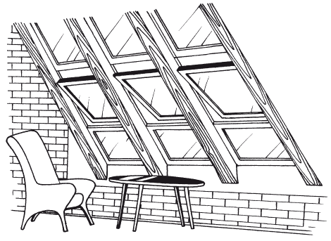
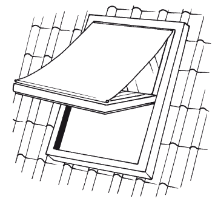
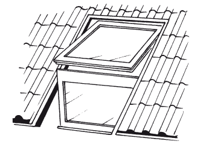
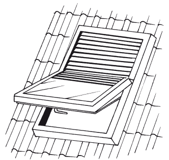

Мансардные окна.

Мы уже говорили, какой популярностью у хозяев частных домов пользуются сегодня мансарды.
Благодаря современным технологиям, мансарды можно сделать более светлыми, чем другие помещения дома.
Мансардные окна можно монтировать в крыши любой конфигурации и сложности, а допустимый угол наклона почти не ограничен. Такие окна изготавливают с тем расчетом, чтобы они выдерживали высокие нагрузки. Если вас они тоже заинтересовали, то не менее ответственным станет для вас выбор мансардных окон. Мансардными называются вертикальные или наклонные окна в скатной крыше. Для обозначения небольших вертикальных окон нередко применяется термин «люкарна» (рис. 26). Они бывают различных форм: треугольные, прямоугольные, арочные, в форме полусферы (рис. 27).



Такой же формы изготавливают и рамы для люкарн. Чаще всего такие окна делают в скатных крышах сложной компоновки. Мансардные окна являются специфичными по внешнему виду и нередко – по своим функциям. Площадь окон должна гармонично сочетаться с площадью самой мансарды, то есть если ваше мансардное помещение не очень большое, то и окна должны быть соответствующих размеров. При выборе окон архитектор должен решить целый ряд задач:
– выбрать оптимальное количество и размер окон для освещения помещения;
– посредством размещения окон в мансардном помещении получить рациональную вентиляцию помещения, то есть обеспечить необходимым количеством свежего воздуха обитателей мансарды;
– мансардные окна гармонично вписать в общий дизайн дома, выгодно его подчеркнув и придав дополнительное изящество сложной форме крыши; либо – в случае применения более простой конфигурации крыши – визуально сделать ее интересней и выразительней.
Вертикальные окна используют для стилизации фасада либо при реконструкции исторических зданий, в других же случаях используют более удобные для архитекторов наклонные мансардные окна (рис. 28). Обычно они устанавливаются под некоторым углом параллельно скату крыши. Как правило, монтируются без люкарн. Вертикальные окна, являющиеся наиболее простыми по конструкции и дизайну, очень гармонично вписываются в архитектурный стиль средневековой Германии. Более интересные решения с использованием вертикальных окон и люкарн соответствуют стилю эпохи раннего Возрождения. Нередко для внешнего декорирования таких окон использовалась лепнина. Довольно бурный всплеск интереса к готике возродил вертикальные мансардные окна, и многие домовладельцы, вдохновленные готикой, реализуют архитектурные идеи того времени в своих повседневных жилищах.
Наклонные окна, как и вертикальные, не обязательно должны находиться в одиночестве. Из них также можно делать составные композиции для улучшения освещения помещения. Для любителей понаблюдать ночное небо прекрасным решением будет составная оконная композиция, показанная на рис. 29. Освещение мансарды, обустроенной таким окном, будет просто потрясающее, а в ночное время небо, усыпанное звездами, можно будет наблюдать невооруженным глазом, раскачиваясь в своем любимом кресле-качалке.


Конечный выбор мансардного окна зависит от многих условий и параметров дома, основополагающими среди которых являются форма крыши и пожелания владельца. Архитектор обязательно их учтет и подберет наилучшие решения, отвечающие стилю вашего дома.
Самостоятельно установить мансардное окно не так уж трудно. Но надо правильно рассчитать его размеры и местонахождение, чтобы оно отвечало требуемым визуальным и антропометрическим параметрам, в соответствии с которыми от пола до верха оконного проема не может быть менее 2 м, а для сидящего человека сектор обзора составляет от 15° и более.
Необходимо грамотно осуществить внутреннюю заделку откосов окна, которые над окном реализуются строго горизонтально, а под ним – вертикально. Благодаря такому подходу, обеспечивается эффективная циркуляция теплого воздуха (при условии, что приборы отопления находятся под окном), что предотвращает образования конденсата на оконном стекле.
Если планируется подоконник, то размещать его лучше на некотором расстоянии от стен для создания воздушного зазора и не забывать про реализацию возможности полного открывания окна.
Окна небольшой высоты устанавливают в крышах со значительным углом наклона. Высота окна тем больше, чем меньше угол наклона. Таким образом сохраняется размер светового проема при разных углах.
В качестве аксессуаров для мансардных окон в целях защиты от солнца используют наружную светозащитную марлицу (рис. 30) и светозащитную шторку (рис. 31).


